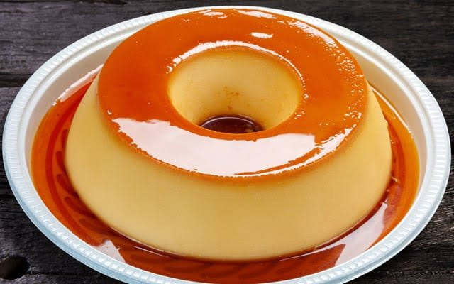

1. Pudim de leite condensado

Categoria: Sobremesas | Preparo:25 min15 min | Banho-maria: 1 h | Geladeira: 4 h | Rendimento: 10 fatias | Dificuldade: Média
Ingredientes:
- 1 lata de leite condensado
- 2 medidas da lata (mesma medida) de leite integral
- 3 ovos
- 1 xícara (chá) de açúcar (para o caramelo)
- 1/2 xícara (chá) de água quente (para o caramelo)
Modo de preparo
- Em uma forma de pudim com furo no meio, derreta o açúcar em fogo baixo, sem mexer, até formar um caramelo dourado. Retire do fogo, junte a água quente com cuidado e espalhe pela forma, cobrindo o fundo e as laterais.
- No liquidificador, bata o leite condensado, o leite e os ovos por cerca de 1 minuto, só até misturar.
- Despeje na forma caramelizada e cubra com papel-alumínio.
- Leve ao forno preaquecido a 180 °C, em banho-maria, por cerca de 1 hora.
- Espere esfriar, leve à geladeira por pelo menos 4 horas e desenforme só depois disso.
Dica
Não bata demais no liquidificador. Muita espuma é o que deixa furinhos no pudim.
Tutorial para a receita